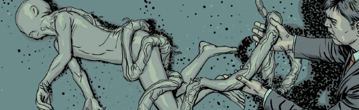

An anthology series allowing for one-off tales with a horror focus.
The "Tharg's" precursor was dropped when the series returned in 2002.
Art by Edmund Bagwell
| Story Title | Parts | Pages | w indicates a wraparound coverCovers | Year(s) | Issues | Writer | Artist | Colourist | Letterer |
|---|---|---|---|---|---|---|---|---|---|
| Waiting for the Night Train | 1 | 6 | 0 | 1993 | 838 | Alan Hale | Eric Bradbury | <-- | Tom Frame |
| The Tooth Fairy | 1 | 6 | 0 | 1993 | 839 | Mark Millar | Greg Staples | <-- | Tom Frame |
| The Last Victim | 1 | 6 | 0 | 1993 | 840 | Alan McKenzie | Mick Austin | <-- | Tom Frame |
| Even Death May Die | 1 | 6 | 0 | 1993 | 841 | Chris McHale | Dave D'Antiquis | <-- | Tom Frame |
| Meat Is Meat | 1 | 4 | 0 | 1993 | 2KYB'94 | Alan McKenzie | Mick Austin | [b&w] | Annie Parkhouse |
| The Uncanny Dr Doctor | 1 | 6 | 0 | 1993 | 860 | Mark Millar | Shaky Kane | <-- | Steve Potter |
| The Succubus | 1 | 6 | 0 | 1994 | 894 | Alan McKenzie | Paul Johnson | <-- | Ellie de Ville |
| Milk & Honey | 1 | 6 | 0 | 1994 | 895 | Mark Millar | Kevin Cullen | <-- | Annie Parkhouse |
| A Man Called Fear | 1 | 6 | 0 | 1994 | 2KYB'95 | Martin Conaghan | Mike Perkins | [b&w] | Ellie de Ville |
| The Operatives | 1 | 8 | 0 | 1994 | WS6 | Nick Abadzis | Paul Johnson | <-- | Ellie de Ville |
| The Devil You Know | 1 | 6 | 0 | 1995 | 936 | Nick Abadzis | Paul Johnson | <-- | Ellie de Ville |
| In Memoriam | 1 | 5 | 0 | 2002 | 1281 | Gary Simpson | Dom Reardon | [b&w] | Tom Frame |
| Snacks of Doom | 1 | 5 | 0 | 2002 | 1282 | Simon Spurrier | Neil Edwards | [b&w] | Tom Frame |
| Scene of the Crime | 1 | 5 | 0 | 2002 | Reprints: M325 (supplement) SFS25 1296 | Al Ewing | Dom Reardon | [b&w] | Tom Frame |
| Murdermind | 1 | 5 | 0 | 2002 | 1311 | Steve Moore | Roger Mason | [b&w] | Ellie de Ville |
| The Statue Garden | 1 | 5 | 0 | 2003 | 1327 | Gary Wilkinson | Dom Reardon | [b&w] | Ellie de Ville |
| Frozen Stiffs | 1 | 5 | 0 | 2004 | 1374 | Steve Moore | Phil Winslade | [b&w] | Tom Frame |
| Krypt | 1 | 5 | 0 | 2004 | Reprints: M333 (supplement)1375 | Nigel Kitching | Richard Elson | <-- | Tom Frame |
| Keeping It Real | 1 | 5 | 0 | 2004 | Reprints: M325 (supplement)1386 | Al Ewing | Cam Smith | [b&w] | Tom Frame |
| Sorrow Hill | 1 | 5 | 0 | 2004 | 1399 | Al Ewing | Shaun Thomas | <-- | Annie Parkhouse |
| Ashes to Ashes | 1 | 5 | 0 | 2005 | 1458 | Steve Moore | Andrew Currie | [b&w] | Tom Frame |
| Contagion | 1 | 5 | 0 | 2005 | Reprints: M438 (supplement)WS8 | Al Ewing | Duane Redhead (P) Lee Townsend (I)various | [b&w] | Annie Parkhouse |
| Cold Spots | 1 | 5 | 0 | 2006 | Reprints: M389 (supplement)1494 | Arthur Wyatt | John Cooper | [b&w] | Ellie de Ville |
| Man Bites God | 1 | 5 | 0 | 2007 | Reprints: M389 (supplement)1533 | Al Ewing | Tiernan Trevallion | [b&w] | Simon Bowland |
| Bad Blood | 1 | 5 | 0 | 2007 | Reprints: M386 (supplement)1539 | Arthur Wyatt | Lee Carter | <-- | Ellie de Ville |
| The Talisman | 1 | 5 | 0 | 2008 | Reprints: M438 (supplement)1575 | Arthur Wyatt | Duane Redhead | [b&w] | Annie Parkhouse |
| Bitter Reflections | 1 | 5 | 0 | 2008 | 1598 | Nicolas Jean | Yann Valeani | [b&w] | Simon Bowland |
| Futurity | 1 | 5 | 0 | 2008 | Reprints: M389 (supplement)1599 | Arthur Wyatt | Cliff Robinson | [b&w] | Simon Bowland |
| Hunters | 1 | 5 | 0 | 2008 | Reprints: M389 (supplement)1608 | Nicolas Jean | Yann Valeani | [b&w] | Simon Bowland |
Linked to Tharg the MightyCounts as One Choice | 1 | 5 | 0 | 2009 | 1645 | Chris Weston | Chris Weston | <-- | Ellie de Ville |
| Poison | 1 | 5 | 0 | 2009 | 1649 | Alec Worley | Ben Willsher | [b&w] | Ellie de Ville |
| Seeing Things | 1 | 5 | 0 | 2009 | 1662 | Alec Worley | Steve Yeowell | [b&w] | Ellie de Ville |
| Lost Property | 1 | 5 | 0 | 2009 | Reprints: M389 (supplement)1665 | Alec Worley | Warren Pleece | [b&w] | Ellie de Ville |
| Pea Patch Podlings | 1 | 5 | 0 | 2010 | 1674 | Arthur Wyatt | Edmund Bagwell | <-- | Ellie de Ville |
| Menhir | 1 | 4 | 0 | 2010 | Reprints: M389 (supplement)1713 | Arthur Wyatt | Graeme Neil Reid | [b&w] | Simon Bowland |
| Birth of the Mazzikim | 1 | 4 | 0 | 2011 | Reprints: M438 (supplement)1737 | David Baillie | Jesus Redondo | [b&w] | Annie Parkhouse |
| Kitsuneland | 1 | 4 | 0 | 2012 | Reprints: M389 (supplement)1784 | Alec Worley | Mark Harrison | <-- | Simon Bowland |
| Blackspot | 1 | 5 | 0 | 2012 | Reprints: M389 (supplement)1801 | John Smith | Edmund Bagwell | <-- | Simon Bowland |
| The Death Magnetic | 1 | 4 | 0 | 2013 | Reprints: M389 (supplement)1836 | David Baillie | Will Morris | [b&w] | Simon Bowland |
| Rattle | 1 | 4 | 0 | 2013 | 1838 | Montynero | Montynero | [b&w] | Simon Bowland |
| The Icarus Incident | 1 | 4 | 0 | 2014 | 1871 | Kek-W | PJ Holden | [b&w] | Simon Bowland |
| Done Deal | 1 | 4 | 0 | 2014 | Reprints: M389 (supplement)1886 | Alec Worley | Tom Foster | [b&w] | Ellie de Ville |
| Phantom Pains | 1 | 4 | 0 | 2014 | WS9 | Eddie Robson | Jeff Anderson | <-- | Simon Bowland |
| Phaseshift | 1 | 4 | 0 | 2015 | 1930 | C.B. Harvey | David Hitchcock | [b&w] | Ellie de Ville |
| Night Shifts | 1 | 6 | 0 | 2015 | Reprints: M389 (supplement)1957 | John Smith | Peter Doherty | <-- | Peter Doherty |
| The Crow Gifts | 1 | 4 | 0 | 2015 | Reprints: M438 (supplement)1958 | David Baillie | Joshua George | [b&w] | Ellie de Ville |
| Why Did the Priest Cross the Road | 1 | 4 | 0 | 2015 | 1960 | David Baillie | Paul Marshall | [b&w] | Ellie de Ville |
Linked to Death‑Man Supertitled "Tharg's Terror Tales".The Death of Death-Man | 1 | 5 | 0 | 2016 | FCBD6 | [Barry Island] | Henry Flint | <-- | Sam Gretton |
| The Hockey Sticks of Hell | 1 | 4 | 0 | 2018 | SFS23 | Olivia Hicks | Abigail Bulmer | <-- | Annie Parkhouse |
| The Ticket | 1 | 6 | 0 | 2018 | 2090 | Paul Tobin | Dan Cornwell | [greyscale] | Simon Bowland |
Linked to QuilliQuilli | 1 | 5 | 0 | 2018 | 2091 | Laura Bailey | David Hitchcock | [greyscale] | Simon Bowland |
Supertitled "Tharg's Terror Tales".The Last of the Hellphibians | 1 | 5 | 0 | 2019 | 2KVS | [The Feek] | Henry Flint | <-- | Ozvaldo Sanchez |
Linked to QuilliThe Quilli Committee | 1 | 5 | David Hitchcock 1 | 2019 | 2134 | Laura Bailey | David Hitchcock | [greyscale] | Annie Parkhouse |
Linked to QuilliQuillivision | 1 | 5 | David Hitchcock (P) & Matt Soffe (C) 1 | 2020 | 2195 | Laura Bailey | David Hitchcock | [greyscale] | Simon Bowland |
| Half Life | 1 | 6 | 0 | 2021 | 2225 | John Tomlinson | Anna Readman | [b&w] | Annie Parkhouse |
| Dry Spell | 1 | 6 | 0 | 2021 | 2232 | John Tomlinson | Steven Austin | [b&w] | Simon Bowland |
| The Way of the World | 1 | 6 | 0 | 2021 | 2244 | John Tomlinson | Smudge | [greyscale] | Simon Bowland |
| The Torturer's Apprentice | 1 | 4 | 0 | 2021 | 2245 | Paul Starkey | James Newell | [greyscale] | Simon Bowland |
| The Thing in Cell 4 | 1 | 6 | 0 | 2021 | 2249 | John Tomlinson | Silvia Califano | [greyscale] | Simon Bowland |
| Roots | 1 | 4 | 0 | 2022 | 2268 | PJ Holden | PJ Holden | [b&w] | Simon Bowland |
| Foreclosure | 1 | 6 | 0 | 2022 | 2269 | John Tomlinson | Anna Morozova | [greyscale] | Jim Campbell |
| Wunza | 1 | 6 | 0 | 2022 | 2285 | John Tomlinson | E. Coveney & A. Vitti | [b&w] | Simon Bowland |
| Last Days in Porpoise Place | 1 | 6 | 0 | 2022 | 2286 | John Tomlinson | Stewart K. Moore | [b&w] | Annie Parkhouse |
| Music of the Spheres | 1 | 4 | 0 | 2022 | 2287 | Kek-W | Warren Pleece | [b&w] | Annie Parkhouse |
| The Vision Thing | 1 | 6 | 0 | 2022 | 2310 | John Tomlinson | Nick Dyer | [b&w] | Simon Bowland |
| In the Wood | 1 | 6 | 0 | 2022 | 2311 | John Tomlinson | Lee Milmore | [b&w] | Simon Bowland |
| Rites | 1 | 4 | 0 | 2023 | 2316 | Honor Vincent | Steve Yeowell | <-- | Jim Campbell |
| Autumnos | 1 | 6 | 0 | 2024 | 2376 | Jon Lock | Richard Elson | <-- | Simon Bowland |
| The Essence of the Piece | 1 | 4 | 0 | 2024 | 2388 | Ed Whiting | Sinu Senan | [greyscale] | Annie Parkhouse |
| year | episodes | pages |
| 1991 | 0 | 0 |
| 1992 | 0 | 0 |
| 1993 | 6 | 34 |
| 1994 | 4 | 26 |
| 1995 | 1 | 6 |
| 1996 | 0 | 0 |
| 1997 | 0 | 0 |
| 1998 | 0 | 0 |
| 1999 | 0 | 0 |
| 2000 | 0 | 0 |
| 2001 | 0 | 0 |
| 2002 | 4 | 20 |
| 2003 | 1 | 5 |
| 2004 | 4 | 20 |
| 2005 | 2 | 10 |
| 2006 | 1 | 5 |
| 2007 | 2 | 10 |
| 2008 | 4 | 20 |
| 2009 | 4 | 20 |
| 2010 | 2 | 9 |
| 2011 | 1 | 4 |
| 2012 | 2 | 9 |
| 2013 | 2 | 8 |
| 2014 | 3 | 12 |
| 2015 | 4 | 18 |
| 2016 | 1 | 5 |
| 2017 | 0 | 0 |
| 2018 | 3 | 15 |
| 2019 | 2 | 10 |
| 2020 | 1 | 5 |
| 2021 | 5 | 28 |
| 2022 | 7 | 38 |
| 2023 | 1 | 4 |
| 2024 | 2 | 10 |
| 2025 | 0 | 0 |
| 2026 | 0 | 0 |